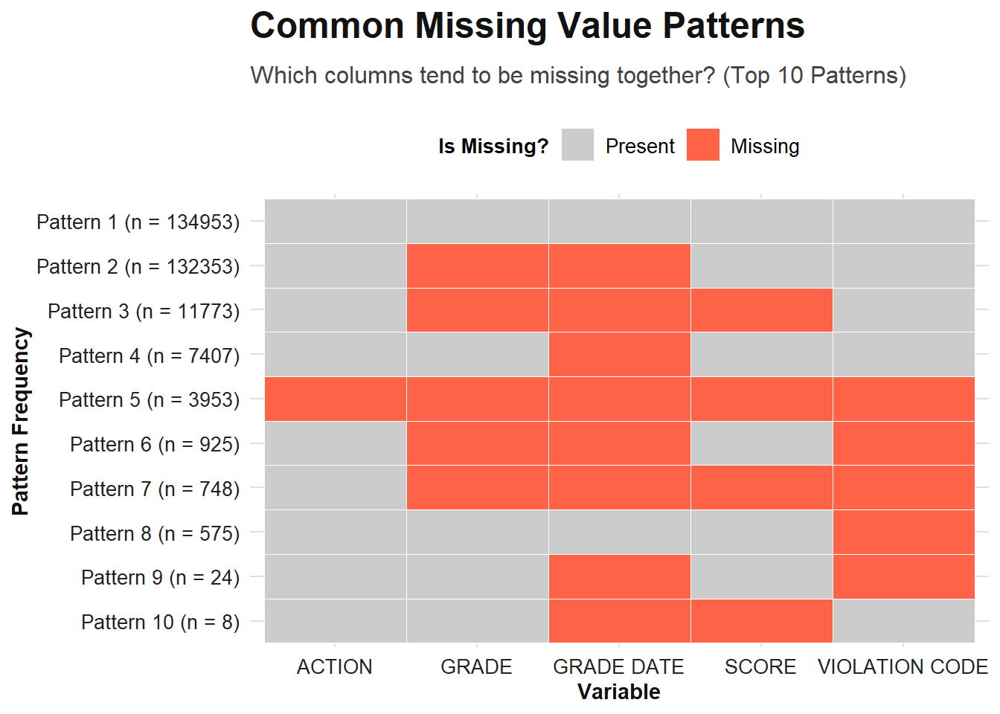

Code
# Load libraries
library(tidyverse)
library(ggdensity)
library(lubridate)
library(dplyr)
library(purrr)
options(dplyr.width = Inf)# Load libraries
library(tidyverse)
library(ggdensity)
library(lubridate)
library(dplyr)
library(purrr)
options(dplyr.width = Inf)# Load the dataset with specific column types
df <- read_csv("C:/Users/famig/OneDrive/Scuola/0 Columbia University/1 Fall 2025/STAT GR5702 - Exploratory Data Analysis & Visualization/EDAV/DOHMH_New_York_City_Restaurant_Inspection_Results.csv",
col_types = cols(
.default = col_character(), # Set default to character for safety
CAMIS = col_double(), # Unique ID
ZIPCODE = col_character(), # Important: Keep as character to prevent stripping leading zeros
SCORE = col_double(),
Latitude = col_double(),
Longitude = col_double(),
`Community Board` = col_double(),
BIN = col_double(),
BBL = col_double()
),
show_col_types = FALSE
) %>%
# Clean up date columns immediately using lubridate
mutate(`INSPECTION DATE` = mdy(`INSPECTION DATE`),
`GRADE DATE` = mdy(`GRADE DATE`),
`RECORD DATE` = mdy(`RECORD DATE`))# Calculate percentage of missing values per column
missing_summary <- df %>%
summarise(across(everything(), ~ mean(is.na(.)) * 100)) %>%
pivot_longer(everything(), names_to = "column", values_to = "percent_missing") %>%
filter(percent_missing > 0) %>% # Filter only columns with missing values
arrange(desc(percent_missing))
# Bar chart
ggplot(missing_summary, aes(x = reorder(column, percent_missing), y = percent_missing)) +
geom_col(fill = "steelblue") +
coord_flip() +
labs(title = "Percentage of Missing Values by Column",
x = "Variable",
y = "% Missing") +
theme_minimal()
The bar chart highlights that GRADE and GRADE DATE are the variables with the highest missingness (approximately 50%). This is consistent with the inspection process, where many initial or administrative inspections generate a score but do not immediately result in a letter grade.
# 1. Create patterns
missing_patterns <- df %>%
select(GRADE, `GRADE DATE`, SCORE, `VIOLATION CODE`, `ACTION`) %>%
mutate(across(everything(), is.na)) %>%
group_by(across(everything())) %>%
summarise(count = n(), .groups = "drop") %>%
arrange(desc(count)) %>%
ungroup() %>%
mutate(pattern_id = row_number()) %>%
pivot_longer(cols = -c(count, pattern_id), names_to = "variable", values_to = "is_missing")
# 2. Prepare data for plotting (Top 10 only)
top_patterns <- missing_patterns %>%
filter(pattern_id <= 10) %>%
# Create a descriptive Y-axis label including the count
mutate(row_label = paste0("Pattern ", pattern_id, " (n = ", count, ")"))
# 3. Visualization
ggplot(top_patterns, aes(x = variable, y = fct_rev(fct_inorder(row_label)), fill = is_missing)) +
geom_tile(color = "white") +
# Manual colors: Orange for Missing, Grey for Present
scale_fill_manual(values = c("TRUE" = "tomato", "FALSE" = "grey80"),
labels = c("Present", "Missing")) +
# English labels
labs(title = "Common Missing Value Patterns",
subtitle = "Which columns tend to be missing together? (Top 10 Patterns)",
x = "Variable",
y = "Pattern Frequency",
fill = "Is Missing?") +
theme_minimal() +
theme(axis.text.x = element_text(angle = 45, hjust = 1)) # Tilt x-axis text for readability
The heatmap reveals that missing data follows structural patterns rather than being random. While Pattern 1 represents complete inspections, Pattern 2 (almost as frequent) indicates cases where a SCORE exists but the GRADE is missing, likely representing “Grade Pending” or initial inspection stages. Pattern 3 highlights administrative violations where neither a score nor a grade is assigned.
# Helper functions to handle NAs safely
last_non_null <- function(x) {
x <- x[!is.na(x)]
if (length(x) == 0) return(NA)
tail(x, 1)
}
safe_mean <- function(x) {
x <- x[!is.na(x)]
if (length(x) == 0) return(NA_real_)
mean(x)
}
# --- DATA TRANSFORMATION ---
restaurants <- df %>%
# 1. TIME FILTER BEFORE GROUPING
# Remove dummy dates (1900) and focus on relevant recent data (post-2015)
filter(`INSPECTION DATE` >= ymd("2015-01-01")) %>%
arrange(`INSPECTION DATE`) %>%
group_by(CAMIS) %>%
summarise(
DBA = first(na.omit(DBA)), # Takes the first non-null name
BORO = first(na.omit(BORO)),
BUILDING = first(BUILDING),
STREET = first(STREET),
ZIPCODE = first(ZIPCODE),
PHONE = first(PHONE),
CUISINE_DESCRIPTION = first(`CUISINE DESCRIPTION`),
# 2. ROBUST COORDINATES
# If the first value is NA, the mean retrieves the location across inspections
Latitude = mean(Latitude, na.rm = TRUE),
Longitude = mean(Longitude, na.rm = TRUE),
n_inspections = n_distinct(`INSPECTION DATE`, na.rm = TRUE),
first_inspection = min(`INSPECTION DATE`, na.rm = TRUE),
last_inspection = max(`INSPECTION DATE`, na.rm = TRUE),
mean_score = safe_mean(SCORE),
# Mean score provides a good summary of overall hygiene performance
last_grade = last_non_null(GRADE),
# Create a list of all unique violations ever received by the restaurant
violations = list(unique(na.omit(`VIOLATION DESCRIPTION`))),
.groups = "drop"
)
cat("Final row count (Restaurants):", nrow(restaurants), "\n")Final row count (Restaurants): 26592 # View the resulting dataframe
restaurants# A tibble: 26,592 × 16
CAMIS DBA BORO BUILDING STREET
<dbl> <chr> <chr> <chr> <chr>
1 30075445 MORRIS PARK BAKE SHOP Bronx 1007 MORRIS PARK AVENUE
2 30191841 D.J. REYNOLDS Manhattan 351 WEST 57 STREET
3 40356018 RIVIERA CATERERS Brooklyn 2780 STILLWELL AVENUE
4 40356483 WILKEN'S FINE FOOD Brooklyn 7114 AVENUE U
5 40356731 TASTE THE TROPICS ICE CREAM Brooklyn 1839 NOSTRAND AVENUE
6 40357217 ASIA PLAZA CAFÉ Bronx 2300 SOUTHERN BOULEVARD
7 40359480 1 EAST 66TH STREET KITCHEN Manhattan 1 EAST 66 STREET
8 40359705 NATHAN'S FAMOUS Brooklyn 1310 SURF AVENUE
9 40360045 SEUDA FOODS Brooklyn 705 KINGS HIGHWAY
10 40361618 SAL'S DELI Queens 12908 20 AVENUE
ZIPCODE PHONE CUISINE_DESCRIPTION Latitude Longitude n_inspections
<chr> <chr> <chr> <dbl> <dbl> <int>
1 10462 7188924968 Bakery Products/Desserts 40.8 -73.9 5
2 10019 2122452912 Irish 40.8 -74.0 3
3 11224 7183723031 American 40.6 -74.0 2
4 11234 7184443838 Sandwiches 40.6 -73.9 6
5 11226 7188560821 Frozen Desserts 40.6 -73.9 3
6 10460 7187411426 American 40.9 -73.9 2
7 10065 2128793900 American 40.8 -74.0 2
8 11224 7183332202 Hotdogs 40.6 -74.0 3
9 11223 7183751500 Jewish/Kosher 40.6 -74.0 3
10 11356 7186619498 Sandwiches 40.8 -73.8 3
first_inspection last_inspection mean_score last_grade violations
<date> <date> <dbl> <chr> <list>
1 2023-01-31 2024-11-08 19.7 A <chr [13]>
2 2023-04-23 2025-02-20 18.4 A <chr [8]>
3 2024-04-16 2025-09-17 6.67 A <chr [3]>
4 2022-01-24 2025-01-06 23.6 A <chr [14]>
5 2023-01-17 2025-04-30 11.3 A <chr [7]>
6 2024-05-21 2025-10-20 12 A <chr [4]>
7 2019-10-01 2022-05-03 9 A <chr [3]>
8 2023-04-26 2025-10-08 40.6 A <chr [12]>
9 2022-01-05 2024-07-29 10.8 A <chr [7]>
10 2022-02-01 2024-09-16 11.6 A <chr [7]>
# ℹ 26,582 more rowsThe original dataset is granular, containing multiple rows for every single inspection and violation. To perform a restaurant-level analysis—such as mapping cuisine locations or comparing hygiene standards across different culinary traditions—we aggregate the data to create a unique entry for each establishment, summarizing its history into single metrics like mean_score and average coordinates.
mapping <- c(
# --- AMERICAN (Include ora Seafood, Jewish/Kosher e varianti regionali) ---
"American" = "American",
"New American" = "American",
"Chicken" = "American",
"Hamburgers" = "American",
"Steakhouse" = "American",
"Barbecue" = "American",
"Hotdogs" = "American",
"Hotdogs/Pretzels" = "American",
"Soul Food" = "American",
"Continental" = "American",
"Californian" = "American",
"Southwestern" = "American",
"Cajun" = "American",
"Creole" = "American",
"Creole/Cajun" = "American",
"Hawaiian" = "American", # Poke è spesso fast casual
# MERGE RICHIESTI:
"Seafood" = "American", # Unito ad American
"Jewish/Kosher" = "American", # Unito ad American (stile Deli)
# --- CAFE, DELI, BAKERY & DESSERTS (Include Sandwiches e Salads) ---
"Coffee/Tea" = "Cafe/Deli/Bakery",
"Bakery Products/Desserts" = "Cafe/Deli/Bakery",
"Donuts" = "Cafe/Deli/Bakery",
"Frozen Desserts" = "Cafe/Deli/Bakery",
"Pancakes/Waffles" = "Cafe/Deli/Bakery",
"Nuts/Confectionary" = "Cafe/Deli/Bakery",
"Fruits/Vegetables" = "Cafe/Deli/Bakery",
# Spostati qui come richiesto:
"Sandwiches" = "Cafe/Deli/Bakery",
"Sandwiches/Salads/Mixed Buffet" = "Cafe/Deli/Bakery",
"Salads" = "Cafe/Deli/Bakery",
"Soups/Salads/Sandwiches" = "Cafe/Deli/Bakery",
"Soups" = "Cafe/Deli/Bakery",
"Juice, Smoothies, Fruit Salads" = "Cafe/Deli/Bakery",
"Bagels/Pretzels" = "Cafe/Deli/Bakery",
"Bottled Beverages" = "Cafe/Deli/Bakery",
# --- ASIAN ---
"Chinese" = "Asian",
"Japanese" = "Asian",
"Asian/Asian Fusion" = "Asian",
"Korean" = "Asian",
"Thai" = "Asian",
"Southeast Asian" = "Asian",
"Bangladeshi" = "Asian",
"Filipino" = "Asian",
"Pakistani" = "Asian",
"Chinese/Japanese" = "Asian",
"Chinese/Cuban" = "Asian",
"Indonesian" = "Asian",
"Afghan" = "Asian",
# --- LATIN AMERICAN ---
"Mexican" = "Latin American",
"Latin American" = "Latin American",
"Caribbean" = "Latin American",
"Tex-Mex" = "Latin American",
"Peruvian" = "Latin American",
"Brazilian" = "Latin American",
"Chilean" = "Latin American",
"Chimichurri" = "Latin American",
# --- ITALIAN (Include Pizza) ---
"Pizza" = "Italian",
"Italian" = "Italian",
# --- EUROPEAN (Spagnola, Est Europa, ecc.) ---
"Spanish" = "European",
"Irish" = "European",
"Eastern European" = "European",
"Russian" = "European",
"Polish" = "European",
"German" = "European",
"English" = "European",
"Tapas" = "European",
"Portuguese" = "European",
"Czech" = "European",
"Scandinavian" = "European",
"Basque" = "European",
"Armenian" = "European",
# --- FRENCH ---
"French" = "French",
"New French" = "French",
"Haute Cuisine" = "French",
# --- MEDITERRANEAN / MIDDLE EASTERN ---
"Mediterranean" = "Mediterranean/Middle Eastern",
"Middle Eastern" = "Mediterranean/Middle Eastern",
"Greek" = "Mediterranean/Middle Eastern",
"Turkish" = "Mediterranean/Middle Eastern",
"Falafel" = "Mediterranean/Middle Eastern",
"Egyptian" = "Mediterranean/Middle Eastern",
"Moroccan" = "Mediterranean/Middle Eastern",
"Lebanese" = "Mediterranean/Middle Eastern",
"Iranian" = "Mediterranean/Middle Eastern",
# --- INDIAN ---
"Indian" = "Indian",
# --- OTHER ---
"Other" = "Other",
"Fusion" = "Other",
"Australian" = "Other",
"Polynesian" = "Other",
"Not Listed/Not Applicable" = "Other",
"African" = "Other",
"Ethiopian" = "Other"
)
# mapping
restaurants <- restaurants %>%
mutate(
cuisine_group = mapping[CUISINE_DESCRIPTION],
cuisine_group = ifelse(is.na(cuisine_group), "Other", cuisine_group)
)
# check
restaurants %>%
count(cuisine_group, sort = TRUE)# A tibble: 10 × 2
cuisine_group n
<chr> <int>
1 American 7188
2 Cafe/Deli/Bakery 5548
3 Asian 4715
4 Latin American 3206
5 Italian 2543
6 European 1023
7 Other 970
8 Mediterranean/Middle Eastern 780
9 Indian 315
10 French 304